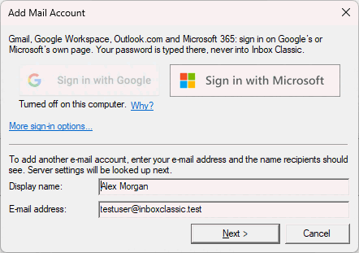

Meilikonto lisamine
Lisage oma esimene või järjekordne konto, logides sisse brauseri kaudu või oma aadressi ja parooliga.
Esimesel käivitamisel avab Inbox Classic akna Lisa meilikonto. Hiljem uue konto lisamiseks valige Fail > Uus konto.

Gmail, Google Workspace, Outlook.com või Microsoft 365
Konto lisamiseks brauseri kaudu tehke järgmist.
- Klõpsake nuppu Logi sisse Google'iga või Logi sisse Microsoftiga. Teie veebibrauser avab teenusepakkuja sisselogimislehe.
- Logige seal sisse ja naaske siis Inbox Classicusse. Konto lisatakse ja selle post hakkab saabuma.
Hägune nupp on selles arvutis välja lülitatud. Klõpsake selle all linki Miks?, et näha põhjust.
Mis tahes muu konto
Konto lisamiseks parooliga tehke järgmist.
- Sisestage väljale Kuvatav nimi oma nimi nii, nagu teised peaksid seda nägema.
- Sisestage väljale E-posti aadress oma aadress.
- Klõpsake nuppu Edasi >. Inbox Classic otsib teie teenusepakkuja sätted, mis võtab mõne sekundi. Nupp Loobu jätab otsingu vahele.
- Sisestage väljale Parool oma parool.
- Kontrollige serverisätteid ja klõpsake nuppu Lõpeta. Inbox Classic logib sisse ja laadib alla teie kaustad.
Kui teie teenusepakkuja tahab tavalise parooli asemel rakenduse parooli, ütleb Inbox Classic seda ja pakub avada teenusepakkuja juhised.
Konto nimi on nimi, millega kaustade loend kontot nimetab, näiteks Töö. Uus konto saab alguses oma teenusepakkuja nime või domeeni. Saate seda konto atribuutides igal ajal muuta.
Oma sisselogimisrakendusega sisselogimiseks klõpsake esimesel lehel nuppu Muud sisselogimisviisid ja valige see.